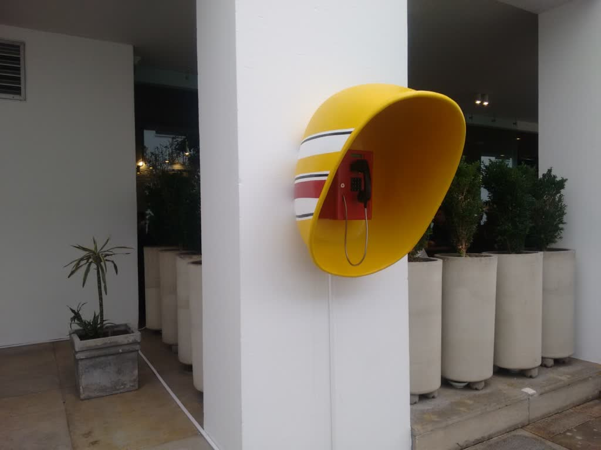
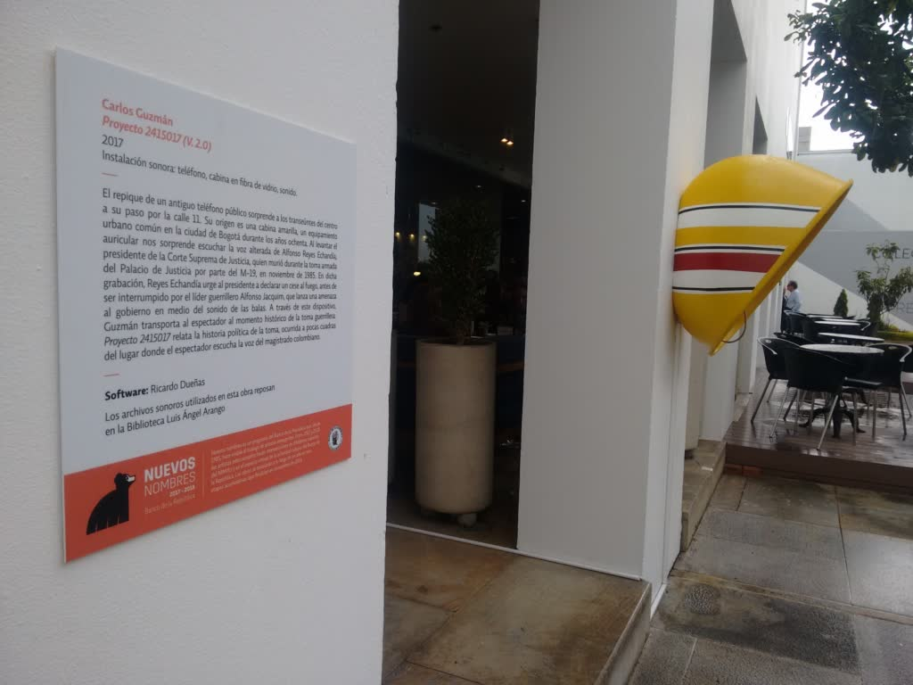
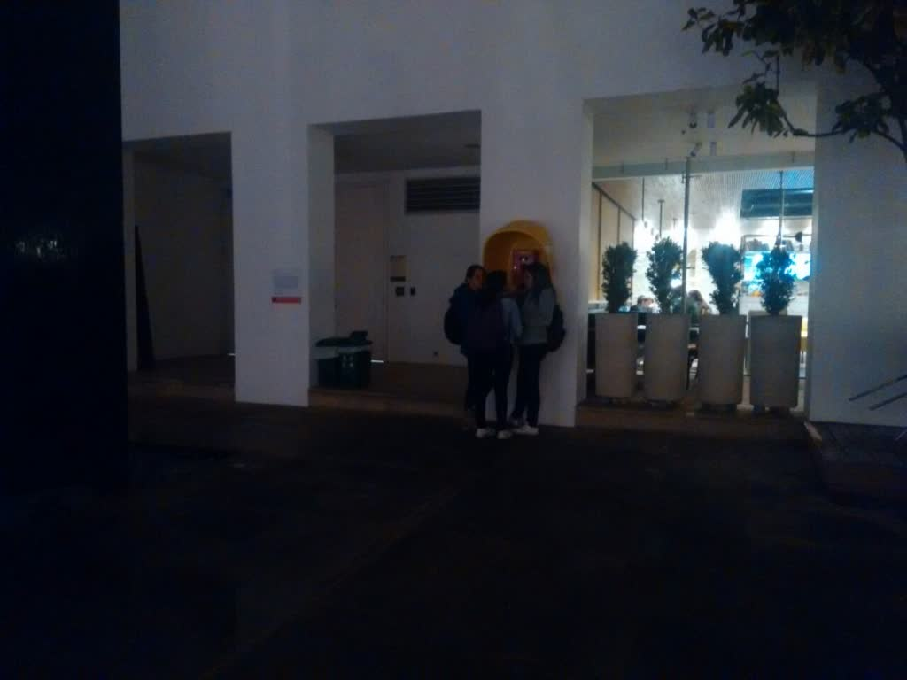

Proyecto 2415017 (V. 2.0)
- Date
- September 2017 – December 2018; maintenance and repair in December 2021 (Banco de la República)
- Venue
- Museo de Arte Miguel Urrutia, Bogotá
- Role
- Software development
- Technologies
- Python, Raspberry Pi
- Credits
- Artist: Carlos Guzmán. Technique: sound installation: telephone, fiberglass booth, sound. Year: 2017. Duration: 38 minutes 29 seconds.

The ring of an old public telephone surprises passers-by downtown as they walk along 11th Street. It comes from a yellow booth, a common piece of street furniture in Bogotá during the 1980s. Picking up the receiver, we are startled to hear the distorted voice of Alfonso Reyes Echandía, president of the Supreme Court of Justice, who died during the M-19's armed siege of the Palace of Justice in November 1985. In the recording, Reyes Echandía urges the president to declare a ceasefire before being interrupted by guerrilla leader Alfonso Jacquim, who threatens the government amid the sound of gunfire. Through this device, Guzmán takes the viewer back to the historic moment of the siege. Proyecto 2415017 tells the political story of the siege, which took place a few blocks from where the viewer hears the magistrate's voice.

